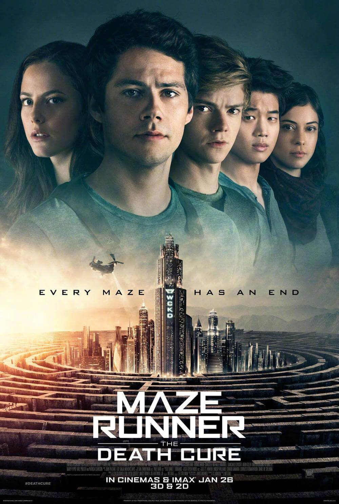

Thomas is deposited in a community of boys after his memory is erased, soon learning they're all trapped in a maze that will require him to join forces with fellow "runners" for a shot at escape.

Dylan O'Brien as Thomas, the last male to enter the Glade
Kaya Scodelario as Teresa, the first and only female Glader
Aml Ameen as Alby, the first to enter the Glade and the leader of the Gladers
Thomas Brodie-Sangster as Newt, second-in-command of the Gladers
Ki Hong Lee as Minho, the head runner
Will Poulter as Gally
Patricia Clarkson as Ava Paige, the head of WCKD
Blake Cooper as Chuck, a very young Glader
A teenager wakes up inside an underground elevator with no memory of his identity. Some male youths greet him in a large grassy area, called the "Glade," enclosed by tall stone walls. The boys, the "Gladers," have formed a rudimentary society, and each assumes specialized tasks. Their leader, Alby, says that every boy eventually recalls his name but not his past. The boy learns that a vast Maze surrounding them is the only way out. During the day, designated Runners search the Maze for an escape route and return before nightfall when the entrance closes. No one has ever survived a night in the Maze. In competition with another boy named Gally, the boy suddenly remembers his name: Thomas. The next day, he is attacked by Ben, a Runner who has been stung and left delirious by a Griever, one of the deadly techno-organic creatures that roam the Maze at night. Ben is forced into the Maze and left to die, as there is no cure for his condition. Alby and Minho, the lead Runner, later retrace Ben's steps inside the Maze. Minho reappears at dusk dragging Alby, who has been stung, but they are unable to reach the closing entrance in time. Thomas runs into the Maze to help, which leaves all three trapped. Thomas lures a Griever into a closing passageway, which causes it to be crushed. The three manage to survive the night and return the next morning.
The first-ever girl arrives in the elevator, with a note saying that she is the last one to enter the Glade. She recognizes Thomas, but he cannot remember her. Thomas, Minho, Frypan, Winston, and Zart enter the Maze, locate the Griever corpse, and remove a beeping mechanical device from inside it. Gally claims that Thomas has jeopardized the fragile peace between the youths and the Grievers, and wants him punished. However, Newt, the group's second-in-command, instead designates Thomas as a Runner. Minho shows Thomas a hand-constructed model of the Maze that is based on previous explorations. The Maze's numbered sections open and close in a regular sequence. Thomas realizes that the device corresponds to a section of the Maze.
The girl, Teresa, has two syringes filled with an unknown substance. One is used on Alby, and he recovers from the Griever sting. Minho and Thomas venture back into the Maze with the device and discover a possible exit. A laser then scans the two, and the exit closes. Thomas and Minho start to run away, as traps activated by lasers nearly kill them. That night, the Maze entrance does not close, and others open, which let Grievers pour in. A massacre ensues, as the Gladers struggle to fight back or hide. Alby, Zart, Clint, and several others are killed. Afterward, Gally punches Thomas and blames him for everything that happened. Thomas, who has been having disconnected memory flashes since his arrival, stabs himself with a severed Griever stinger in an attempt to revive his memory. The others inject him with the last anti-venom. Unconscious, he recalls that he and Teresa worked for the organization that created the Maze, WCKD. The boys unknowingly have been test subjects for an experiment. Thomas awakens and shares that information with Newt, Minho, Chuck, and Teresa. Thomas then reveals himself and Teresa and confesses that they worked with WCKD and studied the boys for years.
Meanwhile, Gally has taken command and intends to sacrifice Thomas and Teresa to the Grievers to restore peace. However, several Gladers form a group, free them, and approach the Maze in an attempt to find an escape. Gally and a few others refuse to leave. Fighting Grievers as they go, Jeff and several other Gladers are killed. The Gladers eventually enter a laboratory strewn with corpses. In a video recording, a woman, Ava Paige, explains that the planet has been devastated by a massive solar flare, followed by a pandemic of a deadly virus, the Flare. The teens learn that they were part of an experiment intended to develop a cure. Paige is seen shooting herself in the video as the lab is overtaken by armed men. Gally suddenly arrives with a gun. Having been stung by a Griever, he insists that they must stay in the Maze and aims at Thomas. Minho impales Gally with a spear, but Gally has already fired the gun, with Chuck fatally shot. While Thomas mourns over Chuck, masked armed men then rush in and take the rest of the group to a helicopter. It flies over a vast desert wasteland and approaches a ruined city.
Later, the supposedly dead scientists meet in a room. Paige notes that the experiment has been successful: the survivors are now entering Phase Two.
Maze Runner